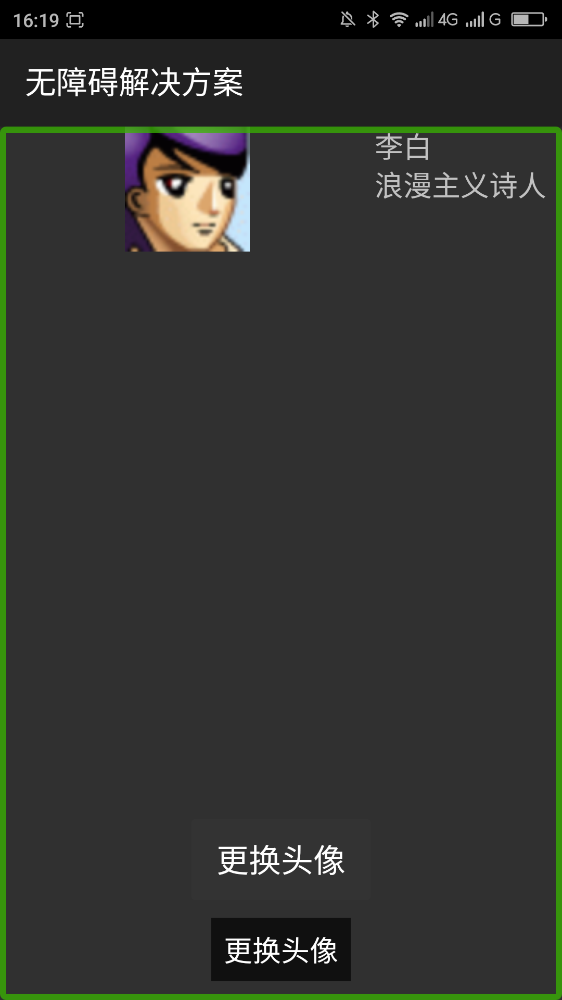
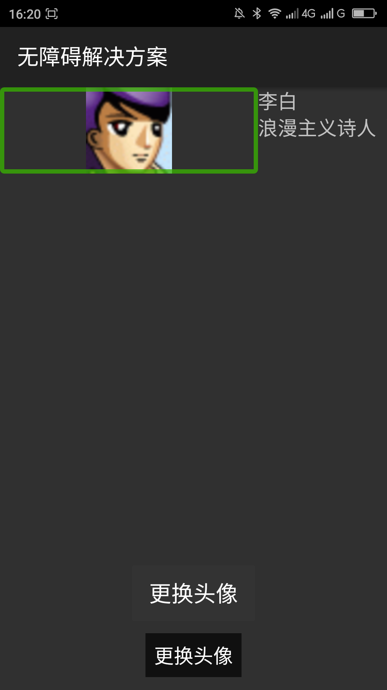

去掉父试图添加点击监听之后的大焦点_____20160518
【问题描述】
当父视图添加了点击监听事件(OnClickListener)之后，父视图会获得焦点，父视图获得焦点的时候会朗读所有默认没有焦点的子控件的内容。而被朗读的子控件没有焦点了。导致用户很难理解界面内容。
【问题解决方案描述】
把添加了点击监听事件的父视图内的默认没有焦点的控件添加上焦点，添加焦点的方法是android:focusable=”true”、android:focusableInTouchMode=”true”。
【解决方案】
下面是布局文件的代码，下面的代码给TextView利用android:focusable、android:focusableInTouchMode两个属性添加了焦点。
复制内容
下面是MainActivity.java的代码：
复制内容
【前后效果图对比】
|  |  |
| 优化前，有一个大焦点，覆盖头像和文本，点击响应事件； | 优化后，大焦点被屏蔽，头像、”李白“、”浪漫主义诗人“点击响应事件； |